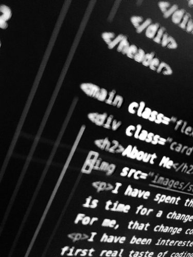

About Me
My first foray into making websites was in elementary school in Microsoft Publisher about things I was passionate about, including my own stories. However, my first real experience with code (more specifically, HTML), was in middle school when I took over my mom's website and dedicated it to shows and books I absolutely loved.
I have gradually dived deeper over the years into web development for personal & business reasons, with the deepest plunges being on Treehouse: completing their front-end web developer track, which has helped me fine-tune my skills and gain confidence in my abilities, and enrolling in their web development techdegree program.
I have worked in retail for the past 10 years or so and I have decided I want a career change. I want something that will better utilize my skill set and provide me with interesting challenges I am more than willing to take on. For me, web development is that career change.
Outside of retail and learning more web development, I do TrainerKelly's Network and Hurricane500000. You can read more about them on the Other Project's page.
When I'm not working on anything, I enjoy reading, binge-watching TV shows, playing video games (both alone and with my husband), and dancing a silly synchronized dance from Japan called parapara (as well as the variation, techpara).
I have a passion for anime, manga, and vegan food.
My preferred pronouns are they/their, although I'll really accept any. He, she, it, they, ze, xie, whatever. I exist. That's all that really matters, right?
Goals & Dreams
Short-Term Goals
- Get a better understanding of Javascript
- Complete Treehouse's Front-End Web Development Techdegree
Long-Term Goals
- Learn Full-Stack Javascript
- Learn PHP & Wordpress
- Learn Python
Dreams
- Be a remote web developer
- Have TrainerKelly's Network fully up & running